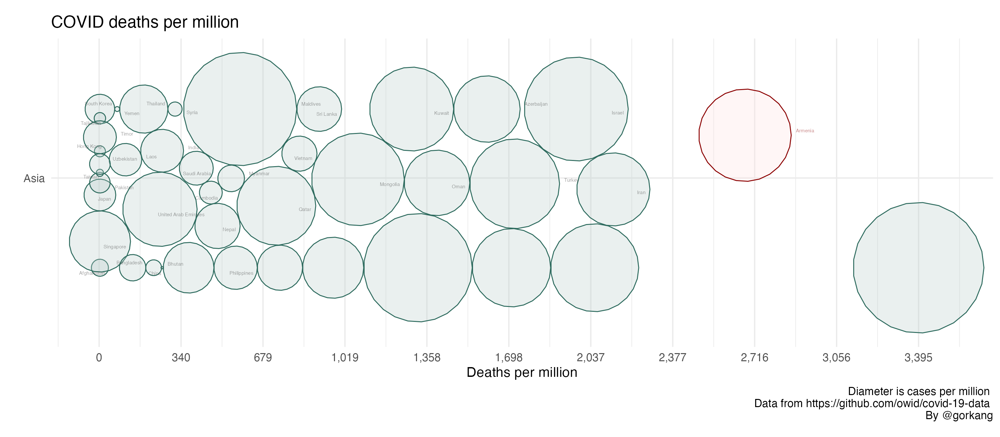
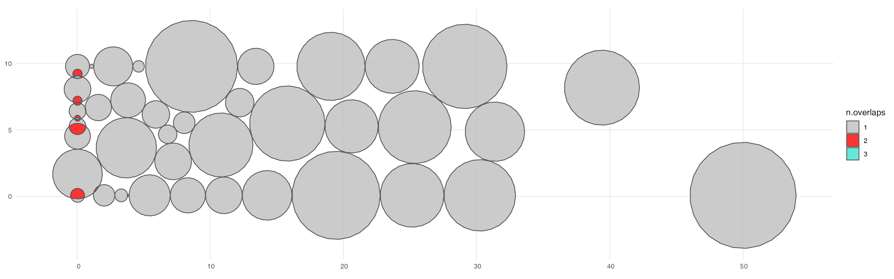

# Load libraries
library(readr)
suppressPackageStartupMessages(library(dplyr))
library(DT)
library(ggplot2)
library(linearpackcircles)
# Data
DF = read_csv("https://raw.githubusercontent.com/owid/covid-19-data/master/public/data/owid-covid-data.csv", show_col_types = FALSE) %>%
filter(date == max(date)) # Keep only most recent dataOriginal Plot
We filter the owid DB to show only one continent. The parameters width_plot and height_group can be adjusted to give enough space to the circles to move around.
# Create Plot
linearpackcircles(DF %>% filter(continent == "Asia"),
ID_var = "location",
group_var = "continent",
area_var = "total_cases_per_million",
x_var = "total_deaths_per_million",
separation_factor = 1, # Separation between groups (i.e. continents)
width_plot = 250, # width "units"
height_group = 10, # height within each group
label_circles = TRUE,
max_overlaps = 8,
size_text = 2,
highlight_ID = "Armenia") +
labs(title = "COVID deaths per million",
x = "Deaths per million",
caption = "Diameter is cases per million \n Data from https://github.com/owid/covid-19-data \nBy @gorkang")
If we don’t give enough space, the circles will start to overlap, or the x axis displacement may be too much for our taste.
# Create Plot
linearpackcircles(DF %>% filter(continent == "Asia"),
ID_var = "location",
group_var = "continent",
area_var = "total_cases_per_million",
x_var = "total_deaths_per_million",
separation_factor = 1, # Separation between groups (i.e. continents)
width_plot = 50, # width "units"
height_group = 10, # height within each group
label_circles = TRUE,
max_overlaps = 8,
size_text = 2,
highlight_ID = "Armenia") +
labs(title = "COVID deaths per million",
x = "Deaths per million",
caption = "Diameter is cases per million \n Data from https://github.com/owid/covid-19-data \nBy @gorkang")
#> Warning in number(x = x, accuracy = accuracy, scale = scale, prefix = prefix, :
#> NAs introduced by coercion
Check
We can check both using the same parameters in the check_linearpackcircles function.
CHECKS = check_linearpackcircles(DF %>% filter(continent == "Asia"),
ID_var = "location",
group_var = "continent",
area_var = "total_cases_per_million",
x_var = "total_deaths_per_million",
separation_factor = 1, # Separation between groups (i.e. continents)
width_plot = 50, # width "units"
height_group = 10, # height within each group
CHECKS_plots = TRUE # Show overlaps plot
) We can see a DF with the details of the overlaps.
datatable(CHECKS$DF_overlaps)Show a plot highlighting where the overlaps are.
CHECKS$plots_overlaps
#> [[1]]
Overview of displacements.
datatable(CHECKS$DF_DIFFS[[1]]$count_output)Detail of displacements
datatable(CHECKS$DF_DIFFS[[1]]$DF_output)